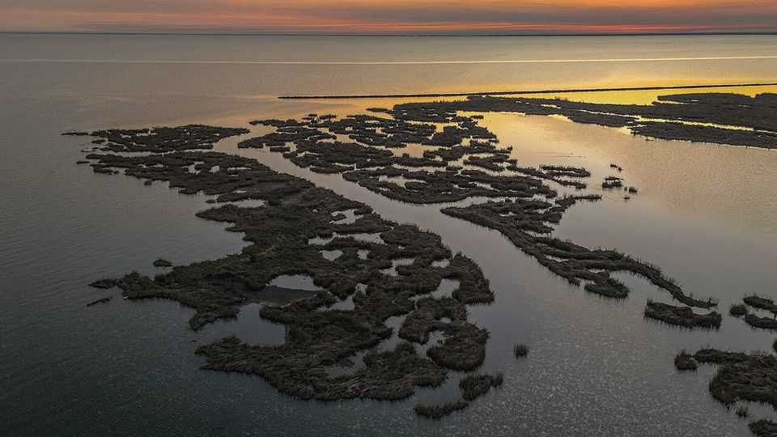

SpaceX plans to build the world’s biggest spaceport
The $100bn facility aims to support up to 30 rocket launches a day

Aug 27th 2026
SPACEX, ELON MUSK’S rockets-and-satellites firm, is already the planet’s leading space power. Last year it flew four times as much mass into orbit as every other company and country combined. But that is only the beginning of the firm’s ambition.
On August 25th it confirmed rumours that have been swirling for months among space nerds by revealing the purchase of 50,000 hectares of southern Louisiana. In a joint announcement with the state’s government, it said it would spend $100bn building a gigantic rocket-launch facility on Pecan Island (part of which is pictured above), about 230km west of New Orleans. Construction should start next year, with the first launches in 2029—though Mr Musk’s deadlines are famously optimistic.
If and when the facility is finished, it will be by far the biggest rocket-launching complex in the world, with at least ten launch pads designed for SpaceX’s enormous Starship rocket, as well as propellant tanks, a deep-water port and an airport. Mr Musk’s ambition is for the site to host more than 30 rocket launches a day, to support both Starlink—the firm’s existing broadband-from-space service—and its plans to fly data centres into orbit, where they would benefit from both free solar power and an absence of NIMBYs.
SpaceX currently launches Starship—which is still in testing—from its Starbase in Texas, and is building three new pads for it at Cape Canaveral in Florida. But Starbase is small, at around 140 hectares, and Florida is crowded: SpaceX shares the Cape with several other launch firms. The firm would have Pecan Island to itself.
The location is attractive, as well. To maximise the solar power they can generate, the firm’s data centres will orbit over Earth’s poles. That means launching north or south rather than east or west. Regulators like launches to take place over the ocean, to minimise damage from accidents. From Louisiana, the only land overflown by a southward launch is a thin strip of central America.
The new site is also reasonably close, by barge, to the giant rocket factory SpaceX is building in Texas. And the Louisiana coast is home to a great deal of oil and gas infrastructure, built to service drilling in the Gulf of Mexico. Starships burn methane, the chief constituent of natural gas, as fuel. With each launch using 1,300 tonnes of the stuff, being near to pipelines and storage tanks would be a big help.
If Mr Musk hits his 30-launches-a-day target, his Louisiana purchase would allow SpaceX to fly about 2m tonnes of payload into orbit every year, up from about 3,800 tonnes in 2025. That really would put everyone else in the shade. ■